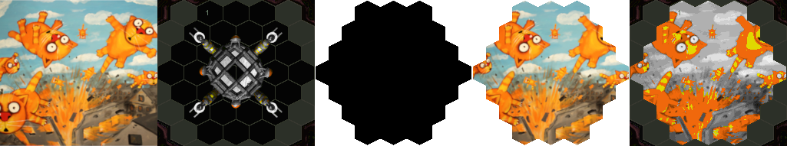

How to edit *.bmp images of items.
- Open modes/2d_item/bmp_to_tga.cfg file in any text editor. Replace value of source_dir option with your Vangers data/resource/actint/800x600/items folder location.
- Launch modes/2d_item/bmp_to_tga.bat.
- Now modes/2d_item/io_tga folder contains *.tga images of items. It's time to edit them. See docs/common/2d_item/items.ods. If you want to replace one of the images, see below.
- Launch modes/2d_item/tga_to_bmp.bat.
- Now modes/2d_item/out_bmp folder contains edited *.bmp images. Contents of modes/2d_item/out_bmp/outside/items folder should be copied to data/resource/actint/800x600/items folder of Vangers. Contents of modes/2d_item/out_bmp/escave/items folder should be copied to data/resource/actint/iscreen/items folder of Vangers. You should backup original data before doing so.
Important
- RLE compression must be disabled while saving *.tga images.
- All *.tga images must be 8-bit and must use default_resources/2d_item/items_outside.pal color palette. Images created with modes/2d_item/bmp_to_tga.bat already have this palette.
- Color with index 0 in the palette is transparent color.
- If nontransparent pixels of image will end up outside of inventory slot of item, this will cause graphical glitches.
- If resolution of image is more than 800x600, the cursor may stuck after selecting the item in the game.
- If you want to replace original image with new one, resize or crop new image so it will fit in inventory slot of the item and then convert it to 8-bit *.tga using palette of any original *.tga.
